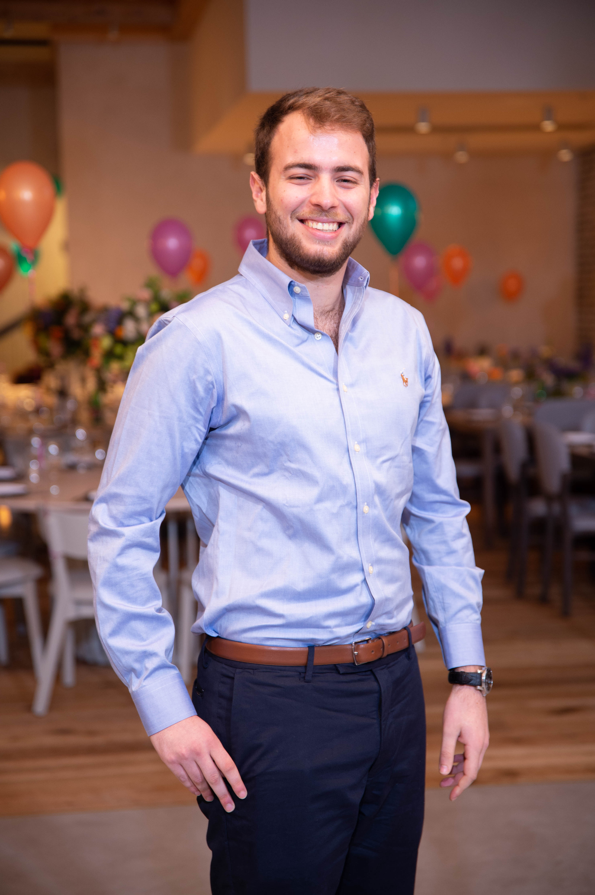

Profile

A computer science and statistics student at Tel Aviv University, driven by curiosity and a quick grasp of machine learning, data analysis, and algorithmic concepts. Highly proficient in programming. Eager to apply my analytical and programming
skills in a role that encourages continuous learning and innovation.
Education
- Computer Science with Statistics & Operations Research , Tel Aviv University, (2021- ).
Third-year student with a strong aptitude for fast learning and a keen sense of curiosity.
Expected graduation: Winter 2025.
- Gan Nahum High School , Rishon Lezion (2014- 2017).
High School Graduate with Excellence, Majoring in Mathematics, English, Physics, and
Biology. Psychometric Score: 732
Experience
- Psychometric and Math Private Teacher (2018-2022).
Significantly improved students' test-taking abilities and elevated their confidence
through effective instruction and personalized guidance.
- Psychometric Instructor at EZ Way (2020-2021).
Instructed full classes and effectively delivered course material, excelling in teaching
quality.
- Spectrum Protector at Unit 513, IDF (2018-2020).
Excelled in high-pressure environments while managing multiple technology-based
missions simultaneously.
Skills and Languages
- Technical Skills: Python, Java, C, R, JavaScript, HTML, CSS, Git, React.
- Personal Skills: Team player, fast self-learner, hard worker.
- Languages: Hebrew (Native), English (Fluent), Russian (Intermediate).
Community Involvement
- Volunteer Physics Instructor, Ron Vardi Center (2016).
Volunteered at Ron Vardy Center , facilitating interactive learning experiences that used
physical tools and models to explain scientific phenomena to children.
Hobbies and Interests
- 🐠 Scuba Diving
- ⛷ Skiing
- 🥾 Trekking
- 🧮 Mathematics
- 📚 Philosophy